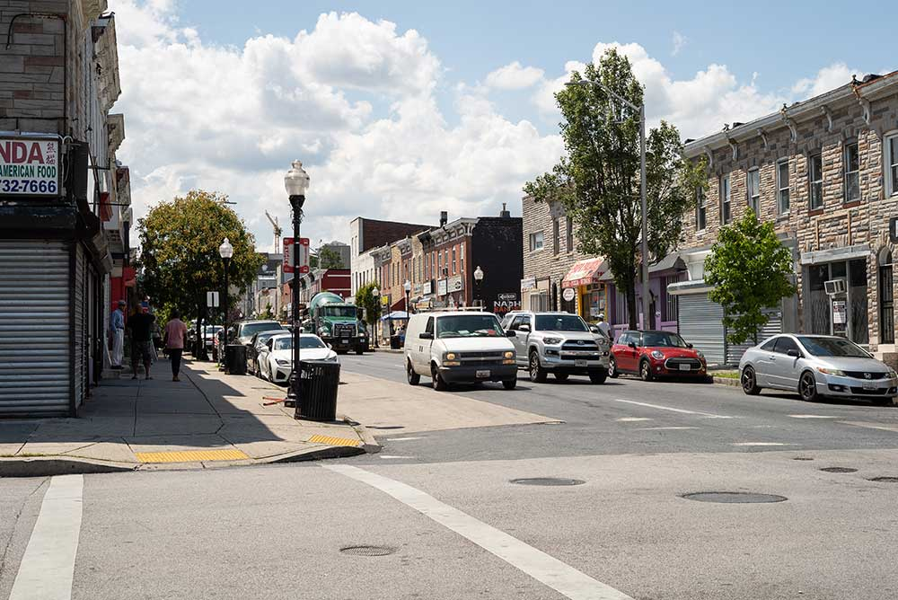

Security concerns
Simmons, 70, and his neighbor Harriett Alexander said McElderry Park used to be more tightknit — “like a village,” Simmons said.
Public health studies have shown that without community cohesion, residents are at more risk when temperatures soar. Baltimore health officials say that isolation is always a danger to health.
Today, Simmons said, many of his old neighbors have died. Only about four people remain from the group of homeowners his mother met when she moved to McElderry Park in the 1980s.

Some residents of McElderry Park say they will not install window air conditioners on the first floor of their rowhouses for fear they offer easy entry for burglars. (Photo by Otto Blais-Nelson | Wide Angle Youth Media)
“Pride is gone,” he said.
He will not put an air-conditioning unit in a first-floor window facing the street “because of security.” He has air conditioning in his bedroom, but he’s mindful that using it costs money.
“One of the things that does concern me is that my electric bill will probably be a lot more just trying to stay cool.”
He said he didn’t know about cooling centers but would rather take an air-conditioned drive or go to the movies than sit in a cooling center.
Alexander, retired from Armco Steel and the Baltimore school system, follows the old Baltimore practice of scrubbing her rowhouse’s white marble steps often. She used to scrub the steps of neighbors’ houses as well. “It’s important to me,” she said. “This is where I live.”
She tends large pots of hostas and lilies that bloom next to her rowhouse steps, and on summer days she sits in the shade of a mature sidewalk tree and chats with neighbors. She has air conditioning in her second-floor bedroom but doesn’t like using it because she fears she wouldn’t hear if anyone was breaking into her house.
“I don’t think it safe to live in a house with an air conditioner running, drowning out everything else,” Alexander said. “You don’t know someone’s in your house until they’re in your room.”
But especially for children, older residents and people coping with chronic diseases, air conditioning is the answer.
Tammy Jackson, who has asthma, said she had to stop cooking dinner one July evening when the heat made it hard for her to breathe. The next day, she told her husband, “Baby, I can’t cook until I get AC.”
Even if someone from McElderry Park decided to find a cooling center, some centers were closed on the weekend. The closest center open Saturday and Sunday was about a mile away — a long walk for the young or the old in 100-degree heat.
Jennifer Martin, Baltimore's deputy health commissioner for population health and disease prevention, said she was “sad and surprised” to hear so many people were unaware of the cooling centers.
By the end of July, the health department had declared 12 Code Red days this year, and the department counted 2,454 people who had visited cooling centers.
“We wouldn’t need cooling centers if we had healthy neighborhoods.”
- Del. Robbyn Lewis of East Baltimore
Martin said the health department is working with community groups to find places in addition to city-owned buildings — maybe churches or community associations — where residents could find a place with air conditioning. Those would offer relief closer to home.
Scott, the City Council president, said that cooling centers are fine but may not be the answer for everyone. “We have to understand the culture of the neighborhood. Some people are not going to want to be leaving their homes to get cool,” he said.
Lewis said, “We wouldn’t need cooling centers if we had healthy neighborhoods.”
Heading off catastrophe
Sixteen people have died of heat-related illnesses in Maryland so far this year, three of them in Baltimore, according to data through Aug. 5. [MUST UPDATE WHEN NEW NUMBERS RELEASED AUGUST 28]
Baltimore has more than its share of heat-related deaths in Maryland
There were 134 heat-related deaths recorded in Maryland between 2012 and 2018. Thirty-seven of those deaths (28%) occurred in Baltimore, which is home to only about 10% of Maryland's population. Maryland recorded 46 heat-related deaths in 2012, when the United States was hit with one of the most severe heat waves in modern American history. There were 28 heat-related deaths in Maryland in 2018, 13 of which occurred in Baltimore. Many of those deaths occurred during a heat wave that hit Maryland in July of that year.
By Amina Lampkin
From July 16 through July 22, when the heat wave broke, 47 people went to emergency rooms when the heat aggravated chronic conditions such as heart disease, diabetes or lung problems.
Yet it could have been worse. Heat catastrophes are not theoretical. In Chicago in 1995, more than 700 people died during a five-day heat wave.
And summer heat will get more extreme. With every year, researchers warn, temperatures will soar higher and the heat waves will last longer — putting more pressure on city governments to help residents cope.
Historically, the Baltimore area has averaged about six days a year when the heat index exceeded 100 degrees, according to new research from the Union of Concerned Scientists and the University of Idaho.
State of the Climate 2018
The American Meteorological Society releases a State of the Climate report each summer summarizing data collected by global environmental monitoring stations around the world. In 2018, here were five key findings.
- 2018 was the fourth warmest year, behind only 2016, 2015 and 2017. Since the start of the 21st Century, every year has been hotter than the global average temperature recorded from 1981 to 2010.
- Glaciers have continued to melt for the 30th year in a row. In 2018, approximately one meter of ice melted off the top of the average glacier.
- Sea levels rose for the seventh year in a row. The annual mean sea level is the highest it’s been in 26 years.
- The global average carbon dioxide concentration at Earth’s surface is the highest ever recorded according to data that goes back 800,000 years. Carbon dioxide, methane and nitrous oxide released in the atmosphere continue to increase.
- Arctic air temperatures rose at twice the rate of the rest of the Earth with the five past years’ Arctic temperatures surpassing records since 1900.
Source: American Meteorological Society's The State of the Climate in 2018
If no action is taken to reduce carbon emissions, by mid-century that figure will rise to more than 37 days annually, according to the researchers. The study defines mid-century as starting in 17 years.
By the end of the century, as a baby born today becomes a senior citizen, there will be 65 days with a heat index of 100 degrees or higher, the researchers projected. That’s about the same number as McAllen, Texas, a city that abuts the Mexican border.
Peter Beilenson, Baltimore’s health commissioner from 1992 to 2005, now the health services director of Sacramento County, California, said health departments could use different strategies to deal with extreme heat.
Public health workers could be redirected during heat waves to knock on doors of people who are most vulnerable to heat, he said. That would allow workers to hand out information on cooling centers and give them a chance to assess whether the resident needs to go to the emergency room.
The Baltimore health department has done this to deal with other problems, Beilenson said — for example, to check on tuberculosis patients or alert residents to the dangers of lead paint.

This block at the edge of the city's McElderry Park neighborhood had tree canopy coverage of about 8% in 2015. (Photo by Katia Crawford | Wide Angle Youth Media)
Candidates for office have long used data that tells them which doors to knock on to meet potential voters. Health workers, Beilenson said, could use data to find the most vulnerable during heat waves.
Martin said the health commissioner had recorded a call warning of the heat that was sent to older people who have used the city's services for aging. But during the 100-degree Code Red emergency, Martin said, the health department did not send teams into neighborhoods.
“Being able to identify vulnerable areas [where people are especially endangered by heat] is very challenging,” she said. Also, “in a heat wave, everyone is at risk, including people who knock on doors.”
Trees help with heat
When Baltimore officials are asked how the city is preparing for the more extreme temperatures ahead, several people point to the efforts by City Hall and volunteer groups to plant more trees. Citywide, the tree canopy in 2015 was 28%, up from 27% in 2007.
In 2015, many East Baltimore neighborhoods had a tree canopy of about 10%, according to a Howard Center analysis of tree canopy data gathered by researchers at the U.S. Forest Service and the University of Vermont. Many blocks had no trees at all.
Some city officials resist questions about where climate change falls on the list of government priorities when City Hall has to deal with poverty, crime, police corruption, poor schools and crumbling infrastructure.
“I don’t like to rank things,” said Scott, the City Council president. “For me, when you’re thinking about issues like heat, that’s connected to safety. It’s all interconnected. We need to stop thinking in silos.”
The relationship between summer temperature and social markers in Baltimore
Hotter areas of Baltimore tend to have higher rates of poverty, crime and unemployment and a shorter life expectancy. This doesn't mean, necessarily, that high temperatures cause these differences. The McElderry Park neighborhood is split between two areas of Baltimore known as Madison/Eastend and Patterson Park North & East. Tap or hover on a dot in the scatterplot to see the associated area and statistics.
BY ADAM MARTON
Temperature and life expectancy
Temperature and unemployment rate
The graphic shows percentage of families living below the poverty line, the average life expectancy, the number of violent crimes per 1,000 residents and the unemployment rate Sources: Baltimore Neighborhood Indicators Alliance 2017 demographic data; Urban heat island assesssment of Baltimore on August 29, 2018 by researchers at Portland State University in Oregon and the Science Museum of Virginia. Data analysis by Roxanne Ready, Sean Mussenden and Adam Marton.
He acknowledges that “trees and climate change were not a high priority for mayors and council members of Baltimore’s past.”
The question, said Scott, who is expected to be a mayoral candidate next year, is “how can we evolve and get more innovative about this discussion?”
At the end of July, Scott released an agenda with 26 priorities for the coming council year. Climate change was not among them.
Rowhouses in the heat
Rowhouses efficiently conserve heat — which is welcome in the winter, a problem in the summer.
On a hot summer day, Melissa Canady walked through the alley behind her rowhouse. The backyard is concrete, poured by a previous owner to create a space that could be cleaned by a broom. Concrete blocks form low walls that separate each yard.
“The neighborhood’s so closed in,” she said. “There are so many houses. There’s no air flow. If there was some way you could get some air into the community.”
Her backyard looks out onto a patch of green, the Amazing Port Street commons, a block of green space cared for by Amazing Grace Lutheran Church and created when a row of vacant houses was razed. The neighbors sometimes use it for events such as community cookouts.
It’s the largest green space for blocks. But some neighbors said they are reluctant to walk their dogs there for fear they will step on syringes discarded by people who use drugs.
Top: The garden entrance at Amazing Grace Evangelical Lutheran Church is one of the few green spaces in the McElderry Park neighborhood. (Photo by Ian Round | University of Maryland) Left: Melissa Canady says that the concrete block walls in her backyard prevent the flow of air and trap heat behind her house. (Photo by Maris Medina | University of Maryland) Right: Harriett Alexander, with her dog, Shakur, doesn’t like using her air conditioner because she might not hear someone breaking into her house.
Coping with the heat
As temperatures in Baltimore reached 100 on July 20, most everyone around the city was staying inside. Some of the people on the streets walked under open umbrellas, carrying their own circle of shade. Men wore damp cloths draped under their caps or on the backs of their necks. No one was moving quickly.
Few people were on the street. “This is the quietest the block ever been,” Tammy Jackson said. “I can’t believe it.”
But city life continued despite the heat. A team of paramedics was called to an East Baltimore block when a resident found a man she didn’t know passed out on her front steps.
The paramedics revived the man, who apparently had overdosed, with a dose of Narcan. He stood up and wandered off, rejecting advice he go to the hospital.
One of the paramedics, holding a bottle of water, stood on the sidewalk and surveyed the quiet street. Everyone walking around on that scorching afternoon was dehydrated, one paramedic observed. Everyone. Keeping enough fluids in the body is difficult in temperatures so extreme.
A little earlier that day, David Brown, 68, sat a few blocks away waiting for a bus. He said he didn’t mind the heat.
And what will he do in future summers, as the heat becomes more extreme?
“Accept it,” he said.
Additional reporting by Jake Gluck, Jane Gerard, Roxanne Ready, Theresa Diffendal and Sean Mussenden.